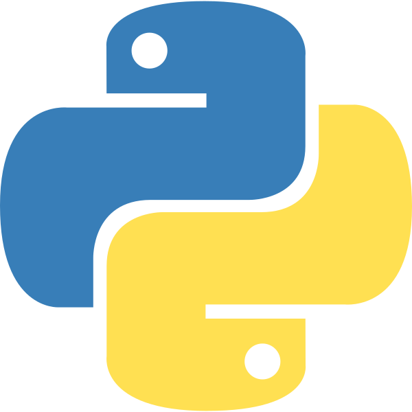

Sales Performance Analysis in Excel
Clean and analyze sales data using Excel formulas, functions, PivotTables, and charts. Use AI assistance where appropriate and present key business findings.
Learn Python, SQL, Excel, Power BI, and AI from basics to advanced concepts through practical exercises and real-world projects, explained in Telugu.
Learn, build real-world skills, and prepare for your data career.
Course Duration
Teaching Language
Mode of Teaching
Start Date
Content Access
Internship
Interview Questions
Daily Job Updates
Placement Assistance
Industry Projects
Start your learning journey with PythonLife
Plan your learning around our upcoming live classes.
UPCOMING BATCH
LIVE CLASS TIMINGS
Topics: Analytics concepts, data types, terminology, the analysis lifecycle, and responsible AI
Students will understand core data analytics concepts and terminology, identify data types, sources, and quality issues, formulate analytical questions and define KPIs, understand the end-to-end data analysis lifecycle, and use AI responsibly in data analysis tasks.
Topics: Spreadsheet skills, formulas, data cleaning, PivotTables, and AI-assisted analysis
Students will use Excel to clean, summarize, analyze, and visualize data, with AI assistance.
Topics: PostgreSQL, querying, aggregations, joins, window functions, and AI-assisted SQL
Students will use SQL to retrieve, combine, transform, and analyze data from relational databases.
Topics: Python setup, Jupyter Notebook, control flow, data structures, functions, and files
Students will learn the Python fundamentals required for data analysis.
Topics: Numerical computing, DataFrames, data manipulation, and AI-assisted Python analysis
Students will manipulate datasets using NumPy and Pandas and use AI tools to assist with Python-based analysis.
Topics: Data quality, cleaning with Pandas, and exploratory data analysis
Students will clean datasets, assess data quality, and conduct exploratory data analysis.
Topics: Matplotlib, Seaborn, chart selection, and analytical reporting
Students will create clear visualizations and communicate analytical findings.
Topics: Descriptive statistics, probability, hypothesis testing, and KPIs
Students will apply statistical concepts, interpret results, and understand business metrics.
Topics: Power Query, data modeling, DAX, dashboards, and AI-assisted BI
Students will prepare data models and build interactive dashboards in Power BI.
Topics: Generative AI, prompt engineering, AI-assisted workflows, and responsible AI
Students will use AI responsibly across the analytics lifecycle and verify AI-generated outputs.
Topics: Project planning, data preparation, final presentation, and course review
Students will plan an end-to-end analytics project, integrate the skills learned, and present it.
Five mini projects and a capstone that put each skill into practice.
Clean and analyze sales data using Excel formulas, functions, PivotTables, and charts. Use AI assistance where appropriate and present key business findings.
Query business databases using filtering, aggregation, grouping, and joins. Extract meaningful business insights and document SQL queries and results.
Load, inspect, clean, and transform datasets using Python and Pandas. Perform calculations, summarize results, and document the workflow in a Jupyter Notebook.
Identify data-quality issues, perform Exploratory Data Analysis (EDA), visualize trends and patterns, and prepare a report explaining the findings.
Prepare and model business data, create measures and KPIs, and build an interactive dashboard to communicate business performance and actionable insights.
Solve a business problem using data preparation, SQL or Python, exploratory analysis, visualization, and Power BI. Validate results and present final insights and recommendations.
Everything you need to learn, practise and get placed, in one program.
Interactive Telugu sessions with experienced instructors, with your doubts cleared as you learn.
Structured notes and practice material to revise and learn at your own pace.
Awarded after you submit your project at the end of the course.
Every session is recorded and shared, with lifetime access to the course content.
Build a strong resume and practise with mock interviews to get job-ready.
1+ month internship, 100% placement assistance and 20+ daily job updates.

Programming
Numerical Computing
Data Analysis
Data Management
Database Management
Data Visualization
Generative AI
AI Assistant
The entry-level roles this course prepares you for, what they typically pay in India, and how pay grows with experience.
Typical annual pay in India (LPA = lakhs per annum). Filter by skill or sort by pay.
| Role | Typical pay | Range (₹0–9L) | Key course skills |
|---|---|---|---|
| Data Analyst Trainee | ₹3.5–6 LPA |
|
Excel, SQL, Pandas |
| Junior Data Analyst | ₹5–8 LPA |
|
SQL, Python, EDA |
| MIS Analyst | ₹4–7 LPA |
|
Excel, SQL, Power BI |
| Reporting Analyst* | ₹3.5–6 LPA |
|
Excel, SQL, Power BI |
| Entry-Level BI Analyst | ₹4.4–8.4 LPA |
|
Power BI, DAX, SQL |
| Operations Analyst* | ₹3.5–6 LPA |
|
Excel, SQL, Statistics |
Indicative annual pay range for data analyst roles. Click a column to see details.
Monthly figures are gross CTC divided by 12. In-hand pay is lower after tax and deductions.
Please note: figures are indicative annual CTC before tax, taken from public 2026 salary guides that differ from each other. *No separate figure was found, so the general fresher range is shown. The BI Analyst range reflects Hyderabad Power BI estimates. Actual offers depend on skills, projects, city and employer, and course completion does not guarantee a job.
What you learn, how classes run, what it costs and what support you get, answered before you enroll.
Search or filter by topic.
You learn the full analyst workflow, from asking the right business question to presenting insights. The syllabus covers:
Analysts now use generative AI to write SQL, Python and Excel formulas, summarize results and draft reports. In every module you practise this with ChatGPT, Gemini and Claude, and you learn to check AI output before trusting it. We also cover prompt engineering, data privacy, bias and hallucinations.
Classes are taught in Telugu. Tool names, commands and technical terms (such as SELECT, DataFrame or DAX) stay in English, so you are comfortable with them in interviews and at work.
It is a live online course. Every session is recorded and shared with you.
Yes. Every concept is taught from basic to advanced level, and the instructor checks that students understand before moving to the next topic.
No. The course starts with analytics fundamentals and builds up through Excel, SQL and Python step by step. There are no eligibility criteria, so anyone interested can participate.
Yes. Classes run in the evening (7:00 PM to 9:00 PM), and recordings let you catch up if you miss a session.
Python, NumPy, Pandas, Jupyter Notebook, Excel, SQL (PostgreSQL), Matplotlib, Seaborn and Power BI. For AI assistance you use ChatGPT, Gemini and Claude.
Power BI Desktop runs on Windows. If you use a different operating system, contact us before joining and we will guide you.
Querying with SELECT, WHERE, ORDER BY and LIMIT; aggregations with GROUP BY and HAVING; INNER, LEFT, RIGHT and FULL joins; subqueries, CASE and CTEs; date, string and NULL handling; and window functions such as ROW_NUMBER, RANK, LAG and LEAD. You also practise text-to-SQL with AI and learn to validate the results.
You begin with Python basics (variables, loops, functions, files) and move to NumPy arrays and Pandas DataFrames: filtering, GroupBy, merge and join, pivot and reshaping, and working with dates and strings. You then apply them to data cleaning and EDA.
Yes. You learn Power Query, data modeling (star schema), basic DAX, KPI cards, slicers and interactive dashboards, and you build a full Power BI dashboard as one of the mini projects.
Yes. The course covers mean, median and standard deviation, probability and distributions, correlation versus causation, hypothesis testing, p-values and confidence intervals, and common business metrics.
The next batch starts on 1 December 2026. Live classes run from 7:00 PM to 9:00 PM (2 hours).
The current fee is ₹9,999 (the listed price is ₹30,000, so you save ₹20,001). EMI options are available. Fees and offers can change, so check the course page for the latest price.
Pay on our website using the Enroll Now link. Right after payment you receive a confirmation from us that guides you through the next steps.
No. Fees are non-refundable. To see how we teach before you pay, watch the free demo class on the course page.
All sessions are recorded and shared with students. You also get lifetime access to the course content.
Yes. Watch the demo from the demo section of the course page, or fill in the demo form there.
Five mini projects and one capstone:
Yes. You receive a course completion certificate from PythonLife after you submit your project at the end of the course.
Structured notes and practice material, class recordings with lifetime access, and a bank of 1000+ interview questions.
We train you to industry requirements and provide placement assistance, resume building, mock interviews and 20+ daily job updates. Results depend on your proficiency, project quality and interview performance, and course completion does not guarantee employment.
Entry-level roles such as Junior Data Analyst, Data Analyst Trainee, Reporting Analyst, MIS Analyst, Entry-Level BI Analyst and Entry-Level Operations Analyst.
Yes, the program includes a 1+ month internship along with real-time industry projects.
PythonLife is a Telugu-first EdTech platform that has trained students and professionals since 2020. Training is practical and industry-oriented, and an experienced instructor is available to clear your doubts.
No questions match your search. Try another word or message us directly.
Message us about batch details, fees or the syllabus.
Watch our free demo class and experience our teaching in Telugu from our Industry experts.